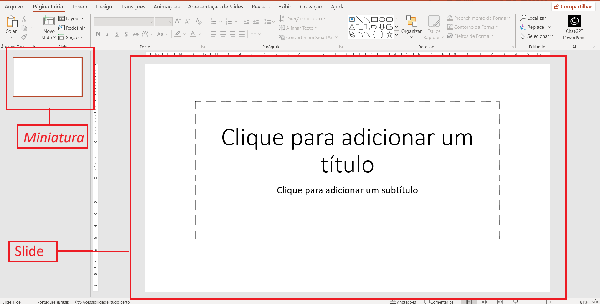
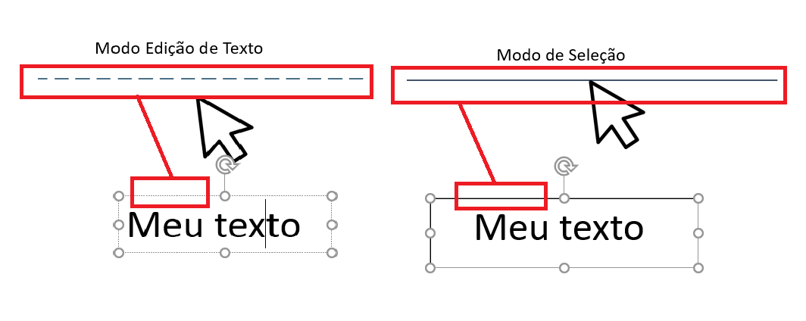
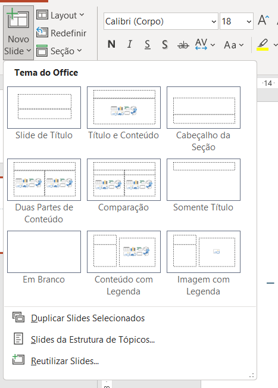

No PowerPoint, um slide é como uma página individual da sua apresentação. Cada slide pode conter texto, imagens, gráficos, vídeos e outros elementos visuais. Pense em uma apresentação como um livro, onde cada slide é uma página que conta uma parte da história.
Os slides são organizados em sequência e você pode navegar entre eles durante a apresentação. O primeiro slide geralmente é o título da apresentação, seguido pelos slides de conteúdo.
As caixas de texto são os elementos principais para adicionar conteúdo escrito aos slides. Para inserir uma caixa de texto:
Você também pode clicar duas vezes em um slide vazio para inserir texto automaticamente.
Após inserir o texto, você pode formatá-lo usando as opções na aba Página Inicial. Além disso no Power Point caixas de textos possuem dois estados, o modo de edição de texto e o modo de seleção. Para ativar o modo de seleção basta clicar sobre as linhas pontilhadas.

Para criar um novo slide, você tem várias opções:

Cada novo slide é inserido após o slide atualmente selecionado. Você pode escolher diferentes layouts de slide, como slides com título e conteúdo, slides de imagem ou slides em branco.
Use o painel de miniaturas à esquerda para reorganizar os slides arrastando-os para cima ou para baixo. Isso ajuda a criar uma sequência lógica na sua apresentação.